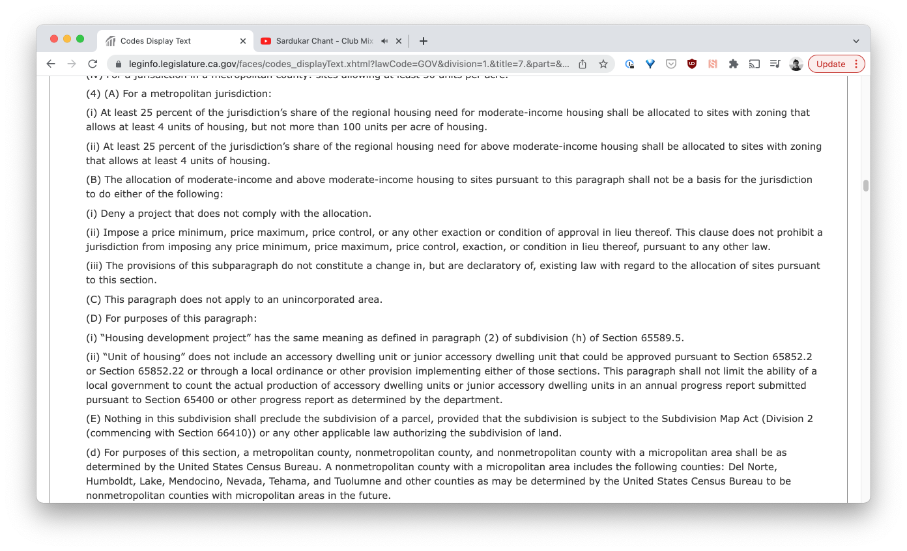
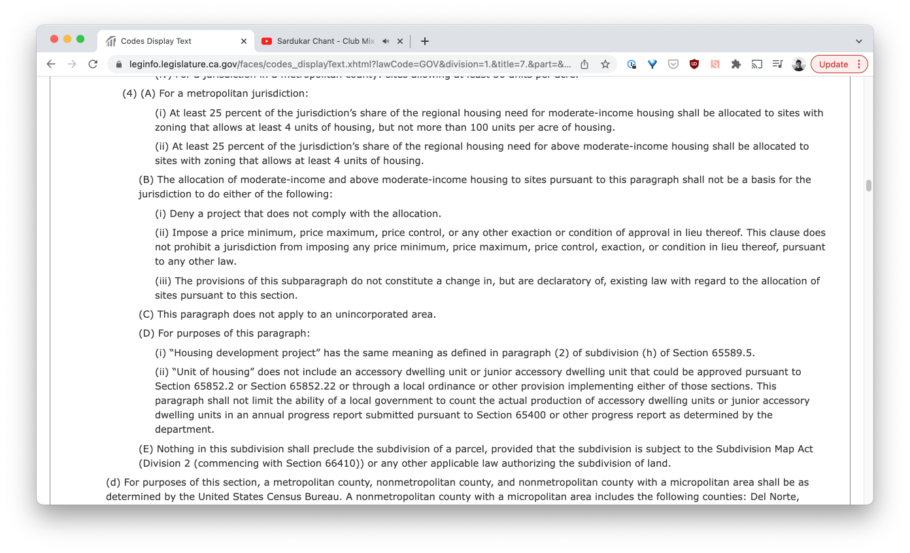

When You Try to Make A Christmas Present and End Up Reformatting the Official California Legal Code
Written by Steven Chun
Published on 21 July 2022
The Unreasonable Effectiveness of Indentation, a Christmas Story
This is the story of a little project for my brother that ended up in front of the leadership of the California State Assembly and Senate and made a lot of wonks and lawyers very happy.
Yuletide Blues
Twas the Christmas Break of 2021, and the Chun siblings once again sat under their childhood roof, nursing coffee and speaking of their woes.
“Well I’m a law student, see”, said my brother, “and it is this website that vexes me.” “The laws of California are lacking in indentation / Might you write some code to save me this consternation?”
He flipped his laptop around, leginfo.legislature.ca.gov loaded in the browser, and here’s what I sawDramatic reenactment.:

This is bad. I think it’s obvious to everyone that laws
a. should |
I count at least five layers of subsections entirely left aligned. Not a tab in sight. Figuring out which provision a subheading falls under requires manually backtracking, noting which heading level you are at, until you find a top level heading.
The insanity this formatting induces has a delayed onset. On first pass you go, “whoa that’s bad haha”. Then you try to find something–it grates you a little. And then with each successive search your vision begins to blur, your will weakens as this unforgiving wall of text rapidly destabilizes your humors, black bile oozing from your ears.
My brother and his colleagues in law had taken to pasting the relevant codes into Microsoft Word and adding indentation manually. To give you a sense of scale, if you were to do that for Title 7, Division 1, Chapter 3, Article 10.6 The Housing Elements , you would be manually indenting 1603 individual codes. Assuming an average heading depth of even just 2 or 3, we’re talking about hitting the TAB button thousands of times.
I’m In
This seemed like a fairly simple project. I could just write a Chrome Extension to add margin based on where we were in the heading structure. Luckily, the alphabets used for each level of heading are consistent–they alwaysMostly. A user later pointed out that part of the California Constitution used an incorrect heading structure. go lower case letter, number, upper-case letter, lowercase roman numeral, and finally uppercase roman numeral.
So I started going big modeI looked at the tutorial for making a Chrome extension a couple times over the course of a month or two before slapping it together over three nights. to try to finish it by Christmas, wrapped in virtual tinsel.

* whizzing, cranking*
*crackle*…typed languages help me feel anchored so we’re using Typescript *slam*
*98% of time spent googling “cool but …classy css transitions for button”*
*design slick extension icon in copy of Sketch I’m not sure I’m allowed to have anymore*
*Realize that there are indiscriminate cases where the next bullet point could be a capital I or a roman numeral I, both equally valid. Consider the legal implications of an orphaned piece of law. Is whitespace law?*
*Do some janky heuristics to differentiate roman numerals and capital letters*
*Heavily emphasize in README.md to not trust the formatter I’m building*
*contemplate rewriting entire thing as an abstract syntax tree, black in*
github.com/stevenrchun/CalCodeFormatter

O, Brother Where Slack Thou?
My brother was very happy with his gift. This is because I am a good listener, gift giver, and an elite programmer.
Brother Chun is also part of several Slacks that are all vaguely related to housing advocacy. Like a Minecraft server for housing wonks. He posted the extension there, which was good, because I honestly do not know who else has a use for this sort of thingLater measurements would put the figure at just over 500 weekly active users who found a use for this thing over the lifetime of the project. I like to think that these people are also unreasonably effective agents of change and that hopefully none of them utilized their newfound powers of legibility to push for bad policy..
It was only then that I realized how long the specter of lost indentation had haunted the civically active in California.
“A true hero. Please send along our gratitude!!!!!”
“Holy crap you just made my life so much easier”
“I love your brother.”
All real things said by nice people who work on important problems.
Then the legislative director of CA YIMBYYes In My Backyard. If you need an opinionated discourse glossary I could point you here , but what if instead of that you started a nice windowsill garden, got to know an elderly person in your neighborhood, or called your parents? What if you did that? This suggestion is an act of kindness; all I ask in return is that if you like where you live, really try to warm yourself to the idea that others deserve to live there just as much as you. tweeted it out:
Incredible new tool from some YIMBY volunteers allows you to reformat leginfo in Chrome to show indentation between subdivisions and paragraphs. https://t.co/2qeJcTdaDr pic.twitter.com/GakV6oGbjN
— Louis Mirante (@louismirante) January 19, 2022
In which I was identified as “some YIMBY volunteers” which is not incorrect as I would like to see more housing built in my San Francisco neighborhood, and I contain multitudes.
However, if housing twitter finds this please–and this is key–do not hurt me.
But this got even more amazing reactions! Like this one:
And you should see the responses I'm getting from my colleagues!
— Gabe Ross (@gabrielmbross) January 20, 2022
The author of which I’m pretty sure is a partner at a big Bay Area law firm. People even started filing issuesActually mostly feature requests, new pages on the website that I hadn’t yet added rules for parsing. I’m really quite pleased to report that the extension itself had surprisingly few sharp edges. on the Github repository. Issues that I never got around to working on because 1. ohmygod how does anyone find time to support open source software and 2. other, good reasons like the one that immediately follows.
And That’s When Things Kicked Into 25th Gear
Feeling famous feels good. I can see why people do it. It’s also easier than being famous. I had maybe 150 people who I don’t know like a tweet where I was the vague focal point, and yet there I was, kerosene in my veins. Things had somewhat settled when I got a Twitter DM from known elected official Alex Lee , California Assemblyman for the 25th district.
Assemblyman Lee was extremely nice, thanking me for making the Chrome Extension but more importantly mentioning that he had been trying to fix this for months and now could use my work as a proof of concept!
In the Bay Area adjacent Twitter circles I follow (as I type this, the bags under my eyes darken noticeably, a sort of curling monkey paw, a reminder of the price one pays to feel marginally adjacent to happening things) Alex Lee is a big deal. It suffices to say that he seems widely liked by the Bay’s famously fractious liberal facets with his eye on the right issuesI encourage the reader to look up his Social Housing Bill. Unfortunately, it died in committee. But if you care about housing, the bill felt like a real shot at doing things differently, beyond the incrementalism that is so innate to the field..
A bit later a Google Form circulated among various civic groups, where people could write in to detail how they had been personally victimized by Leginfo’s lack of indentation. I filled it in, basically saying, “I don’t actually read the law very often but hoo boy lotta people seem to have this issue.”
A couple of months later, my brother forwarded me an email. An advocacy group he’s part of had received a communique from Lee’s chief of staff. With the sign off of the Speaker and Pro Temp of both houses, Lee’s office had managed to push through an initiative to reformat the website. They had used my extension to help demonstrate how much easier it is to read indented bills and to clarify what exactly it was that they were asking for.
I loaded up leginfo.legislature.ca.gov and there it was: Indentation too cheap to meter. No need to trigger any exciting…but refined CSS transitions to turn on better formatting.
I’m pretty certain Lee’s office was going to get this done regardless of whether a programmer released a Chrome Extension showing roughly how it might be done.
But I like to think I helped.More entrepreneurial folk than I might attempt to draw morsels of thought leadership from this experience, “10 Lessons from a Successful Civic Coding Project” or “Building for the User: What Weird Things Do Lawyers Hate”. I have no such guidance. Figured this was just a cool enough thing to happen that I ought to document it. People deserve nice things, even lawyers.
* |
[^1]: Dramatic reenactment.
[^2]: Mostly. A user later pointed out that part of the California Constitution used an incorrect heading structure.
[^3]: I looked at the tutorial for making a Chrome extension a couple times over the course of a month or two before slapping it together over three nights.
[^4]: Later measurements would put the figure at just over 500 weekly active users who found a use for this thing over the lifetime of the project. I like to think that these people are also unreasonably effective agents of change and that hopefully none of them utilized their newfound powers of legibility to push for bad policy.
[^5]: Yes In My Backyard. If you need an opinionated discourse glossary I could point you here , but what if instead of that you started a nice windowsill garden, got to know an elderly person in your neighborhood, or called your parents? What if you did that? This suggestion is an act of kindness; all I ask in return is that if you like where you live, really try to warm yourself to the idea that others deserve to live there just as much as you.
[^6]: Actually mostly feature requests, new pages on the website that I hadn’t yet added rules for parsing. I’m really quite pleased to report that the extension itself had surprisingly few sharp edges.
[^7]: I encourage the reader to look up his Social Housing Bill. Unfortunately, it died in committee. But if you care about housing, the bill felt like a real shot at doing things differently, beyond the incrementalism that is so innate to the field.
[^8]: More entrepreneurial folk than I might attempt to draw morsels of thought leadership from this experience, “10 Lessons from a Successful Civic Coding Project” or “Building for the User: What Weird Things Do Lawyers Hate”. I have no such guidance. Figured this was just a cool enough thing to happen that I ought to document it. People deserve nice things, even lawyers.
[^9]: In the Winter months, wood smoke from residential homes is the leading cause of Bay Area air pollution, eclipsing even traffic smog.